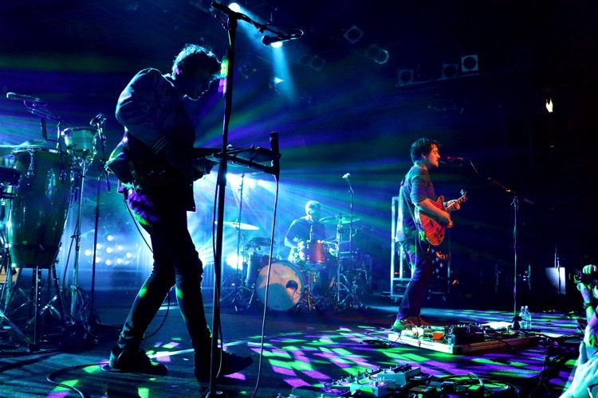

We are a German folk group originating from Kassel, consisting of lead vocalist and guitarist Clemens Rehbein, bassist and percussionist Philipp Dausch and me, the guitarist, Antonio Greger.
Our first single was stolen dance, I really enjoyed making it especially after getting attention from SPIN as he called it a "erenely rollicking crossover jam". Then came the release of our album sadnecessary which boomed, I was happy to see people enjoy our music you know. So that's us.

These are the clossest ones, the rest can be found here